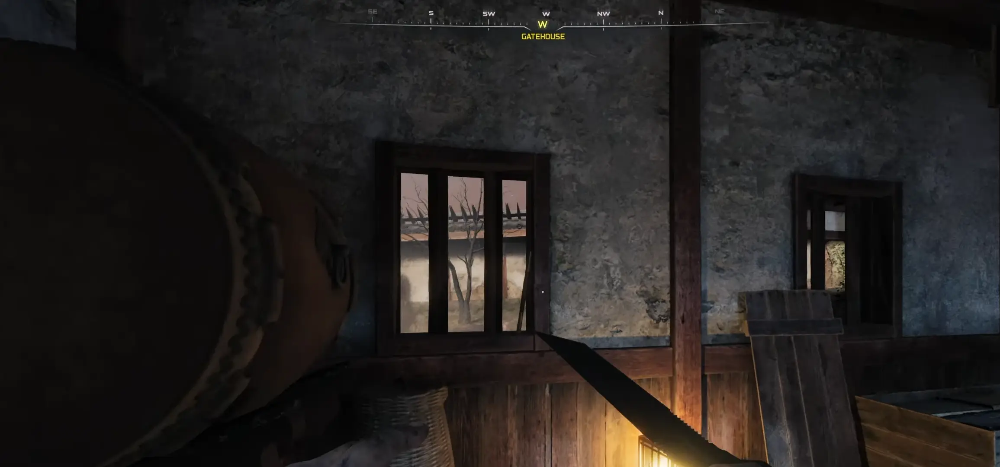
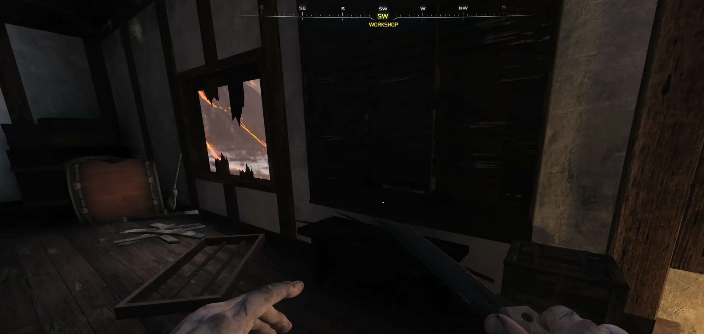

← Powrót do poprzedniej strony
Ten relikt wymaga wyczucia rytmu i pewnego oka. Możecie go zdobyć na dowolnym poziomie klątwy.
KROK 1: Znajdź Pałeczki (Drumsticks)
Zanim zaczniecie koncert, potrzebujecie narzędzi. Na mapie ukryte są dwie pałeczki perkusyjne:
- Gate House (Stróżówka): Pierwsza pałeczka czeka na Was w tym budynku.
- Workshop (Warsztat): Drugą znajdziecie wśród narzędzi w warsztacie. Podnieście obie, a będziecie gotowi do gry.


KROK 2: Sekwencja w Kuchni (Kitchens)
Udajcie się do budynku Kuchnie, wchodząc od strony Flower Garden (Ogród kwiatowy). Przy schodach znajdziecie dwa bębny.
- Podejdź do tego, który świeci, i wejdź z nim w interakcję, aby rozpocząć wyzwanie.
- Musisz uderzać nożem bębny w takiej kolejności, w jakiej gra je pokaże.
- Czekają Cię trzy rundy. Pierwsze dwie są proste, ale trzecia jest długa i podstępna.
PRO TIP: Nagrajcie tę ostatnią sekwencję telefonem, żeby się nie pomylić!

KROK 3: Wyzwanie Portalu (Tylko Snajperki!)
Po poprawnym ukończeniu trzech sekwencji obok Was pojawi się portal.
- UWAGA: Zanim wejdziecie, musicie mieć Karabin snajperski. W tym wyzwaniu tylko ta broń zadaje obrażenia!
- Polecam ulepszyć snajperkę Ion w maszynie Pack-a-Punch – znajdziecie ją naprzeciwko samej maszyny ulepszającej P&P.
KROK 4: Przetrwanie Fal
Wewnątrz portalu musicie przetrwać 4 fale zombie.
- Przygotujcie się na dwie fale HVT.
- Używajcie Gobblegums, takich jak Instakill (Natychmiastowe zabójstwo), aby ułatwić sobie sprawę.
- Po ukończeniu czwartej fali zostaniecie przeteleportowani z powrotem i odblokujecie relikt.
NAGRODA: Relikt Gramofon
Ten relikt to totalna miazga dla fanów czystych obrażeń:
- EFEKT: Wasze pociski zadają znacznie większe obrażenia, ale każdy strzał zużywa teraz dwa naboje z magazynka.